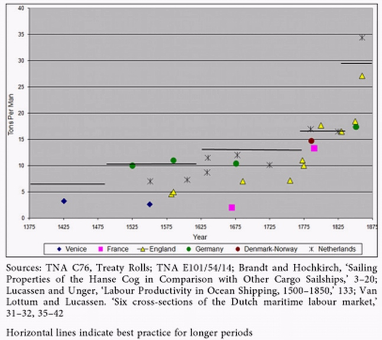

Некоторые соображения о водоизмещении первых каравелл
Лоцман, вниманье:
Тоннаж перегружен!»
Нах Руслянд ― машины,
Нах Полянд – оружье.
И. П. Уткин. Два мира (1930). Цит. по ruscorpora.ru
Уже несколько раз, говоря о каравеллах, мы утверждали, что первые португальские корабли этого типа были относительно невелики, их водоизмещение не превышало 30-40 тонн. Источники этих утверждений – умозрительные рассуждения морских историков и археологов, так как прямых данных, свидетельствующих о размерах первых каравелл, не существует. Нет их, и все. А что тогда дает нам основание утверждать, что тоннаж каравеллы в начале XV века не превышал 30 тонн? При том это было довольно узкое судно: отношение длины его киля к наибольшей ширине корпуса оценивают как 5:1. (Для сравнения это соотношение на каравеллах XVII века, на заключительном этапе их истории, было всего-то 2,64:1. Погрузнел малютка, пузо распустил.)
Основным источником данных о водоизмещении первых каравелл служат архивные данные о численном составе их экипажей. Морские историки довольно часто используют такое понятие, как manning ratio –отношение численности экипажа к водоизмещению корабля, точнее, к его грузоподъемности. Этот коэффициент, таким образом, дает нам число членов экипажа, приходящееся на одну тонну перевозимого груза. Подобная величина имеет глубокие исторические корни. Впервые регламентировать ее стали еще в первых морских статутах. Так, в венецианском морском статуте 1255 года (так называемый статут Зено, по имени правившего тогда дожа Венеции) статья XX озаглавлена «О численности моряков на навах и других кораблях» (Quot marinarios naues et alia ligna tenentur habere). Эта статья определяет, что на каждое судно грузоподъемностью 200 миллиариев необходимо назначать экипаж 20 человек (affirmamus quod nauis uel aliud lignum de ducentis milliariis habeat marinarios uiginti), и на каждые 10 миллиариев дополнительной грузоподъемности следует назначать еще по одному моряку (et prò quibuslibet decem milliariis que nauis uel aliud lignum plus fuerit extimatum uel extimata, unum marinarium plus habere debeat). О том, чему равняется один миллиарий мы подробно рассказывали раньше, его значение изменялось со временем, поэтому здесь примем грубую оценку: 1 миллиарий=500 кг. Таким образом мы получаем оценку manning ratio : 1 член экипажа на 5 тонн груза. По мере совершенствования кораблей это отношение изменялось и в XV веке достигло величины 1 человек на 10 тонн груза.
Однако эти коэффициенты вряд ли стоит применять к исследовательским каравеллам XV века. Длительный поход, сопровождавшийся неожиданными опасностями, неминуемо сопровождался большой смертностью среди членов экипажа по самым различным причинам. А это требовало наличие дополнительных, резервных работников по сравнению с обычным штатным составом команды.
Так, по документам из канцелярии португальского короля Афонсу V, датированным 1453 годом, на каравелле водоизмещением 32-33 тонелей (ок. 25 тонн) экипаж насчитывал 13 человек, а для карвеллы в 50 тонелей (ок. 40 тонн) численность команды была 25 человек. Кроме того, необходимо было на борт кораблей, идущих в неведомые земли, брать профессиональных солдат. Так, Livro Náutico (1575-91) отмечает, что каравелла грузоподъемностью 150-180 тонелей имела на борту 129 человек, однако это число включало 64 морских пехотинца, которые в состав экипажа не входят.
Существовали и другие ограничения на размеры каравелл, не связанные с соображениями эффективной перевозки грузов. Португальский мореплаватель Дуарте Пачеку Перейра в своей знаменитой книге Esmeraldo de situ orbis приводит подробное описание береговой линии от Гибралтара до Индии. Описывая рельеф побережья, Перейра отмечает, что большинство гаваней и бухт побережья Западной Африки очень ограничены по своим размерам, что не позволяет организовывать там якорные стоянки и укрытия для крупных судов (Перейра считает, что эти гавани способны принять корабли грузоподъемностью не более 20-30 тонелей.) Это стало еще одним из факторов в том, почему так долго сохранялось небольшое водоизмещение португальских каравелл.
В результате поистине героических усилий морских историков были построены графики зависимости численности экипажа от грузоподъемности кораблей. Так, известный британский историк Ральф Дэвис обобщил имеющиеся данные для английского флота. У него получилось, что в середине XV века на одного человека экипажа приходилось 4 тонны груза, в конце XVI века – 6 тонн на человека, в середине XVII века 8 тонн на одного члена экипажа, в конце XVIII века – 18, и, наконец, в середине XIX – 25 тонн на одного члена экипажа.
Итоговую картину можно видеть на графике из статьи Jan Lucassen и Richard W. Unger Shipping, Productivity and Economic Growth

Обработке подверглись источники с 1375 по 1875 год, в итоге выявлено пять фаз, которые на графике отмечены пятью плато. В дальнейшем, надеюсь, нам удастся проанализировать характер этого графика, сейчас же отметим, что для грубой (очень грубой) оценки водоизмещения первых каравелл нам достаточно знать численность их экипажей.
Продолжение последует.